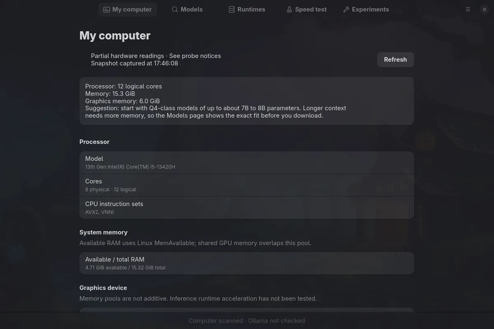
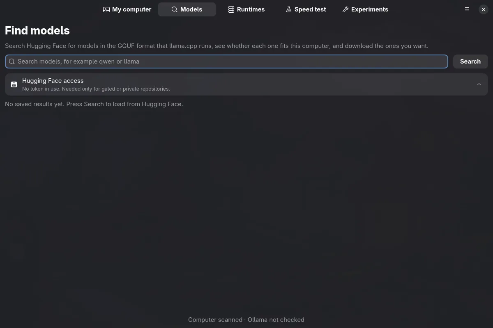
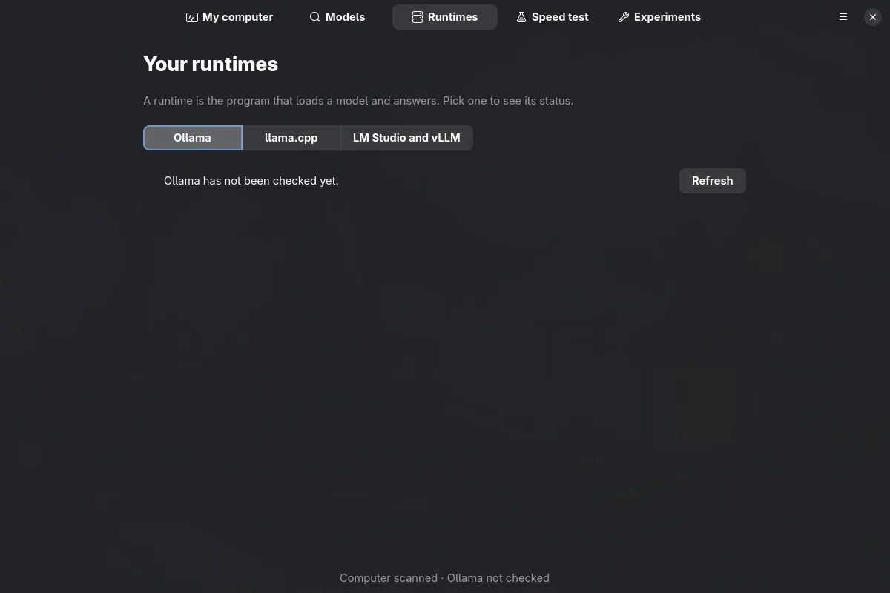

Local AI Workstation for GNOME
Know what your machine can run, then measure it.
Kvlm explains whether a local model fits your memory, shows the inference runtimes you already run, and benchmarks what you choose. It is a native GTK4/Libadwaita control plane for Linux: no root, no telemetry, and no guesses.
0.1.3 beta
The interface
Five pages, switchable with Ctrl+1 to Ctrl+5. These screenshots come from a 13th-gen Intel i5 laptop with 16 GB of RAM, captured on 29 October 2026 in a Wayland/Hyprland session, not a GNOME session.



What it does
Three memory pools stay separate: dedicated VRAM, shared GPU memory, and system RAM. Shared GPU memory is never added to host RAM.
-
Hardware discovery
CPU and RAM, NVIDIA VRAM through NVML, AMD VRAM and GTT through sysfs. Missing readings stay unknown, never zero.
-
Conditional memory fit
Weights, K/V cache, compute buffers and runtime allowance for an explicit context, with a per-component breakdown. A verdict is conditional on the scenario you supply.
-
Model catalog and downloads
Hugging Face GGUF search with pinned revisions, deduplication against Ollama and the HF cache, resumable verified downloads, and a gated-model token kept in the desktop keyring.
-
Attached runtimes, read only
Discover Ollama, LM Studio and vLLM on loopback. Kvlm never stops them, edits their units, or deletes their models.
-
Managed llama.cpp
Checksum-verified portable install, launch profiles, and supervised start/stop/restart on
127.0.0.1with bounded logs. -
Speed test
One explicit, cancellable streaming request to a local Ollama model, with server decode rate and sampled RAM, VRAM and GTT peaks. History is stored locally.
-
Experiments
Cold and warm runs on the managed llama.cpp server, diagnostics with evidence, A/B comparison, and a one-setting follow-up.
-
Developer exports
Continue.dev, Zed and OpenCode snippets plus a
systemd --userunit, generated as text you copy.
From a file to a verdict
Fit estimates are conditional, not promises. A saved benchmark proves one prior request, not every future context or placement.
The arithmetic
For a supported GGUF layout, Kvlm adds the resident weights, the K/V cache at your context length, compute buffers, and a runtime allowance. The calculator is pure: it never probes or downloads anything by itself.
When metadata is missing, the answer is Unknown, not an optimistic fit.
Layout warnings block the breakdown path, and an architecture claim stays separate
from runtime compatibility.
Verdicts
- Comfortable
- Constrained
- Not recommended
- Unknown
Verdicts always carry a text label, never colour alone.
Five pages
- My computer. Processor, memory, graphics memory, and the fit calculator.
- Models. Search, inspect, download, and keep track of model files.
- Runtimes. Ollama, llama.cpp, LM Studio and vLLM, with ownership stated.
- Speed test. One explicit Quick Benchmark and its local history.
- Experiments. Cold/warm runs, diagnostics, comparison and follow-up.
It does not touch what it does not own
Attached: yours, read-only
Ollama, LM Studio and vLLM are discovered on loopback. Kvlm lists their models and reads memory and loaded state. It never stops or restarts them, edits their system units, or deletes their files.
Managed: installed and owned
Kvlm can install a portable llama.cpp build it verifies, start and stop it on
127.0.0.1, read bounded logs, and benchmark it on the Experiments page.
Install
Kvlm is a beta built from source. You need Linux, Rust stable 1.92+, GTK 4.12+, Libadwaita 1.4+, Meson, Ninja, a C toolchain and pkg-config.
From source
git clone https://github.com/dexterhere/kvlm.git
cd kvlm
scripts/install.shThe installer checks dependencies, prints the package command for your distribution
if something is missing, and installs under ~/.local. It never runs
sudo. Use --check to report only, or --uninstall
to remove it.
Release files
Version tags attach kvlm-<version>.flatpak,
kvlm-<version>-x86_64.AppImage and SHA256SUMS to the
GitHub release.
Both are built in CI. Neither has been installed and run on a real machine yet. If they do not work, build from source. There is no store package.
Reporting a hardware problem
Run local-ai-workstation --report-hardware and attach the output. Device
identifiers, paths and times are removed.
Privacy
- No telemetry and no crash uploads.
- Startup makes no network request at all.
- The network is touched only after you press a button.
- A Hugging Face token lives only in the desktop keyring, never in a file or database.
- Benchmark history stays in a local SQLite database under your data directory.
- Attached runtimes are read-only; no root is required.
Status of the 0.1.3 beta
| Milestone | Scope | State |
|---|---|---|
| M0 | Hardware, memory fit, attached Ollama, Quick Benchmark | Complete for the accepted baseline (RTX 4050 laptop) |
| M1 | Models page, catalog, downloads, token | Implemented; live run recorded |
| M2 | Managed llama.cpp, exports | Implemented; CPU build served in a live run |
| M3 | Experiments | Implemented; toy model on CPU in a live run |
| M4 | LM Studio/vLLM, accessibility, packaging | Implemented; validation pending |
Not yet validated
AMD GPUs and APUs, a CPU-only AVX2 machine, GPU builds of llama.cpp, a real chat model in Experiments, LM Studio and vLLM against live servers, a real GNOME session, and a screen-reader pass.